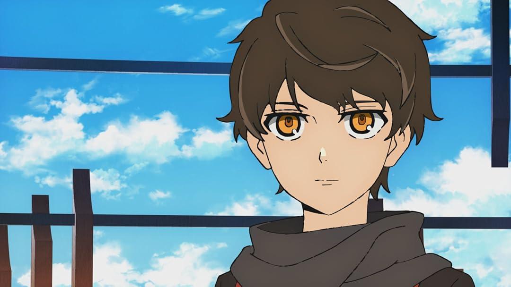

Baam
História: Baam é um jovem que cresceu confinado em uma caverna escura, com uma única amizade: Rachel. Quando ela decide escalar a Torre em busca de seus próprios objetivos, Baam a segue, sem saber o que lhe aguarda.
Poderes: Baam possui habilidades extraordinárias, incluindo um vasto poder desconhecido. Ele é altamente adaptável e pode aprender rapidamente novas habilidades à medida que avança na Torre.
Papel no Anime: Baam é o principal protagonista, sua busca por respostas sobre seu passado e a amizade com Rachel o leva a enfrentar desafios complexos e a formar alianças e inimigos ao longo do caminho.
Voltar à galeria